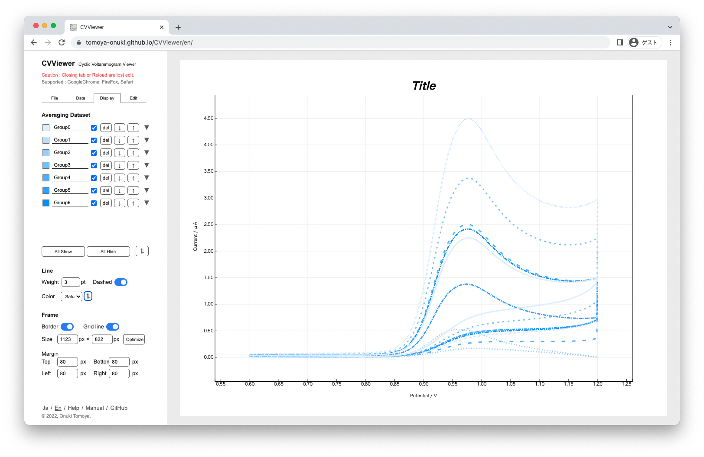

CVViewer
2022.08 / WebApplication

概要
CVViewerはサイクリックボルタンメトリー (cyclic voltammetry, CV) という電気化学計測によって得られたデータを可視化するためのツールです。サイクリックボルタンメトリーとは応答電流を測定する手法であり、電気化学分野において最も基本的かつ多用される測定法です。
課題
データの分析の際、誤差を低減するために複数の計測データの平均値を計算しグラフ化することがおおい。
しかし計測されたデータはテキストやCSV形式で個別で書き出されるため、分析者はデータを手作業で表計算ソフトにコピーしてからグラフ化する必要がある。
特徴
- 複数の計測データファイルをそのまま読み込むだけで、平均値の算出からグラフ化までを自動的に行うことができる。
- 複数のフォーマットに対応することができる。
- 分析に欠かせない最大値・最小値を自動で計算し、表示する。
- グラフの細かいデザインの調整などを行える。
- 情報可視化の知見に基づいた自動配色を行える。
- 集約されたデータは再利用可能な形で書き出すことができる。
Development
TypeScript, D3.js, chroma.js